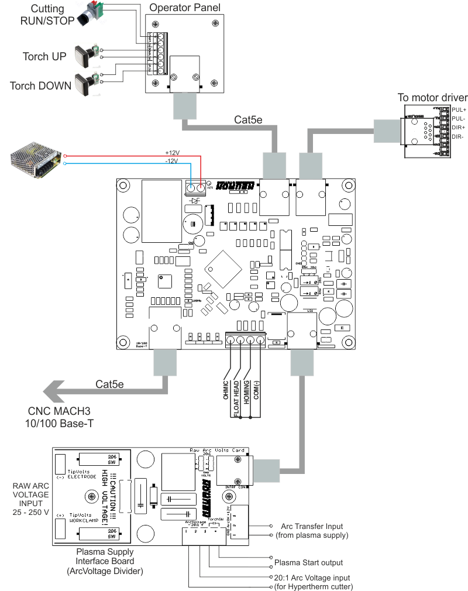
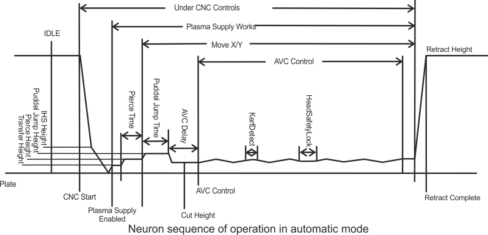
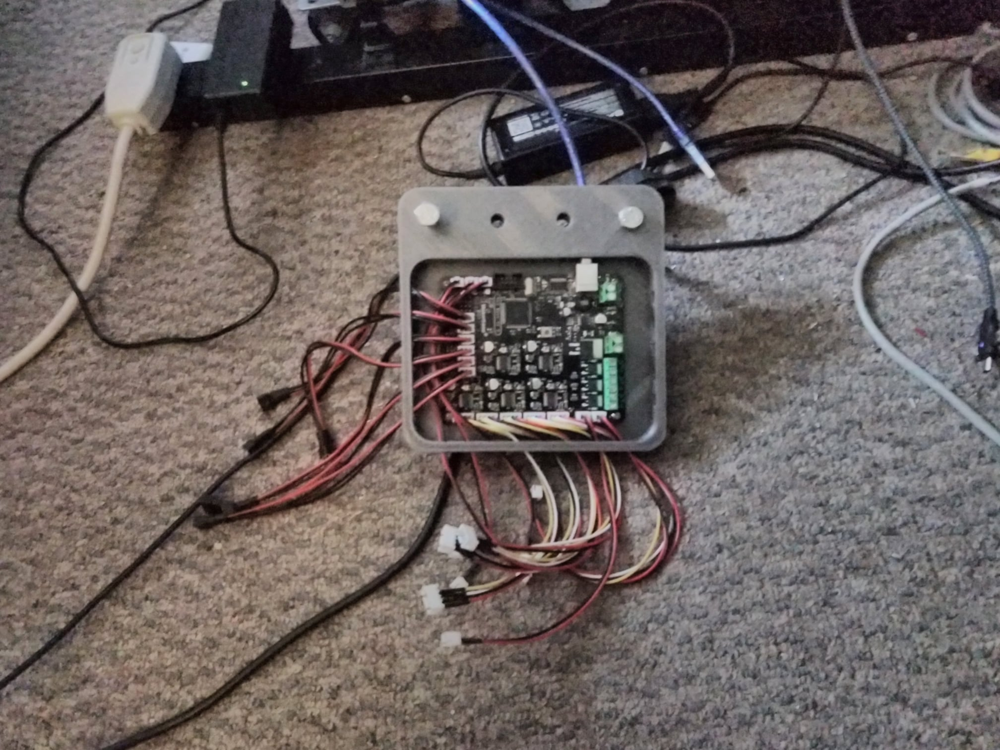
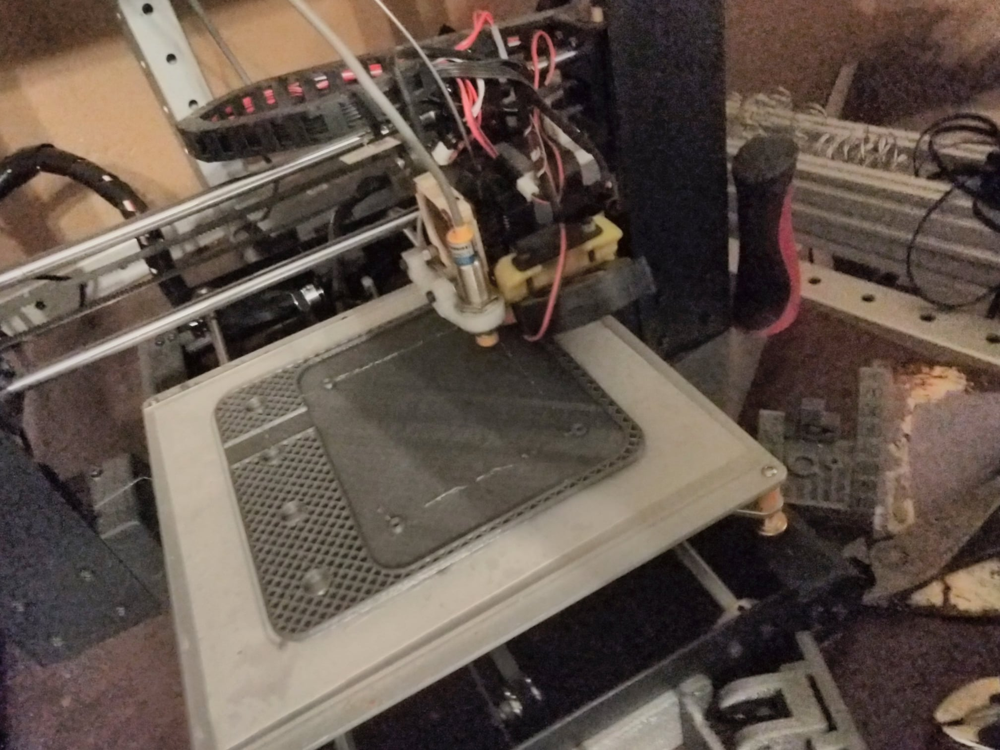
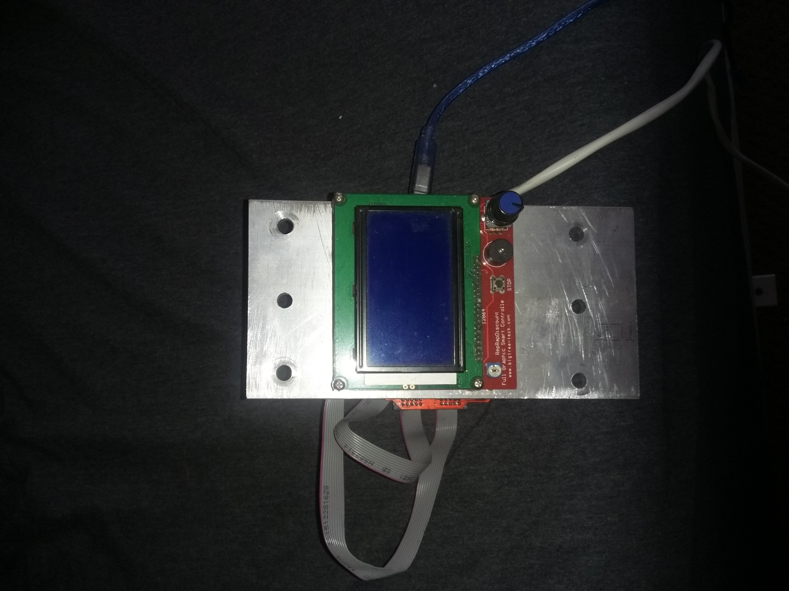
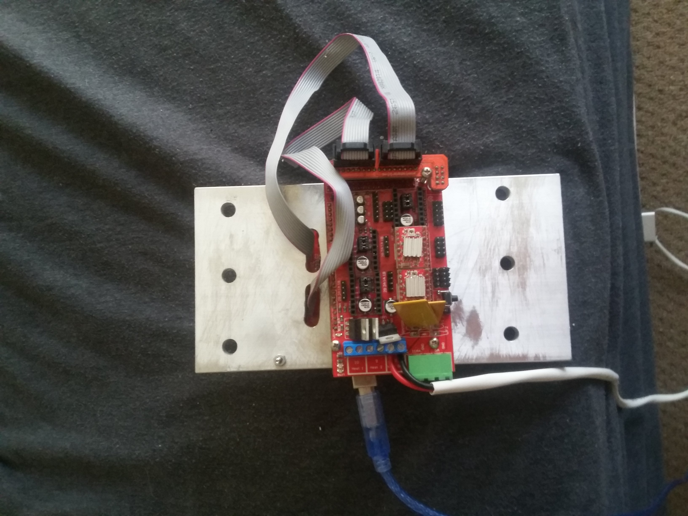

controllers revision 9226
^ Parts infobox ^^
| image | Controllerrev1.jpg |
| designers | [[user:tim|Timothy Schmidt]] |
| date | 2013 |
| vitamins | |
| materials | |
| transformations | |
| lifecycles | |
| parts | [[resistors|Resistors]], [[capacitors|Capacitors]], [[inductors|Inductors]], [[microcontrollers|Microcontrollers]], [[transistors|Transistors]], [[diodes|Diodes]] |
| techniques | [[voltage_dividers|Voltage dividers]], [[buck-boost_converters|Buck-boost converters]], [[active_rectification|Active rectification]], [[gate_drivers|Gate drivers]], [[current_sensors|Current sensors]], [[digital_to_analog_conversion|Digital to analog conversion]], [[analog_to_digital_conversion|Analog to digital conversion]], [[pulse_width_modulation|Pulse width modulation]], [[pid|PID]], [[bang_bang|Bang bang]], [[mppt|MPPT]] |
| tools | [[3d_printers|3D printers]], [[soldering_irons|Soldering irons]], [[drill_presses|Drill presses]] |
| files | |
| suppliers | |
| git | |
Introduction
Industrial control system (ICS) is a general term that encompasses several types of control systems and associated instrumentation used for industrial process control.
Such systems can range in size from a few modular panel-mounted controllers to large interconnected and interactive distributed control systems with many thousands of field connections. Systems receive data from remote sensors measuring process variables (PVs), compare the collected data with desired setpoints (SPs), and derive command functions which are used to control a process through the final control elements (FCEs), such as control valves.
Larger systems are usually implemented by supervisory control and data acquisition (SCADA) systems, or distributed control systems (DCS), and programmable logic controllers (PLCs), though SCADA and PLC systems are scalable down to small systems with few control loops. Such systems are extensively used in industries such as chemical processing, pulp and paper manufacture, power generation, oil and gas processing, and telecommunications.
Challenges
Most devices require some internal logic or digital control. Most devices go about that in entirely incompatible ways. Can a single open inexpensive multipurpose controller replace most single-purpose machine control electronics?
potential functions
- aiming solar panels
- logging power input from mains, solar, wind, etc
- logging power usage from batteries
- maintaining comfortable internal temperature and humidity
- maintaining hot water / refrigerated food
- managing solar oven
- managing internal lighting - individually addressable RGB LED strip allows for full light, night light, simulated sunrise/sunset, simulated lightning, etc.
- managing compost
- laundry?
- dishes?
- managing small indoor garden - light, watering, airflow, humidity - microcosm of all it's normal duties. Room for systems design reuse
- interact with the wifi router / server / TV / workstation
Approaches
We work hard to avoid depending on computers as much as possible - for example: Replimat projects can be drawn with pen and paper and the grids. Where we do depend on computers, we work hard to make sure they're as simple as possible, the same computer everywhere possible, that they run the same software everywhere possible.
<youtube>X-DY6iL6NcI</youtube>\\
Laser additions to open source Marlin 3D printer firmware for Buildlog.net, OpenSLS, and mUVe3D demonstrate adaptability of existing ultra-low-cost 3D printing control solutions to a wider range of problems.
A collection of power, control, cooling, and container components are suggested, which connect the elements common to a variety of machine control problems, as well as additions to increase the range of acceptable input and output voltages. This allows the
controller to consume power from a variety of solar panel and battery configurations, and to control peripherals originally designed for other applications (i.e. found, salvaged, or otherwise repurposed equipment).
Parts
- Highly compliant input power/voltage (20 - 72v input into 180W buck converter, suitable to be run directly from solar, salvaged batteries, spotty grid power, buckwired into optional LiPo charger circuit, then to MKS 1.4 power-in):
- https://www.amazon.com/gp/product/B018X03GYA/?tag=replimat-20
- High-current adjustable voltage output (High-power heated bed FET of MKS 1.4 wired to high-amp adjustable buck-boost before the connector)
- https://www.amazon.com/gp/product/B00N8EVQ30/?tag=replimat-20
- https://www.amazon.com/KOOKYE-printer-RepRap-Driver-Graphic/dp/B01HAU7T6K/?tag=replimat-20
- https://github.com/MarlinFirmware/Marlin
- Laser cut coroplast box
- Copper acetate solution - vinegar (white) + hydrogen peroxide + copper
*0.6mm solder
Interoperability:
Development targets:
- Soldering iron attachment
- Share inductors across HV, buck-boost, etc.
- Printed power connector (PETG printed sprung m3 bolt (printed-in-place spring mechanism) and buna-n or ninjaflex O ring panel mount waterproof connector, crimp-on terminal connector for m3 bolt)
Battery charger
- Inductive load driver - ZVS driver (IRFP260N mosfets - 50A 200V - $3 ea Ebay:
- http://www.infineon.com/dgdl/irfp260n.pdf?fileId=5546d462533600a4015356289dcf1fe2 , inductors, capacitors) - inductive cooking, inductive forge, inductive plastic injection nozzle, inductive laser power supply driver - lux wire from TV CRT yokes, Electrical Discharge Machining, http://www.ebay.com/itm/281814315969 )
- H bridge driver ICs - adjust gate voltage relative to source voltage on the mosfets where source is tied to motor input
- https://www.digikey.com/product-detail/en/NCP5104DR2G/NCP5104DR2GOSCT-ND/1802370
- Instructables: DIY 1kW MPPT Solar Charge Controller
- Github: Open Solar Project Controller
Multimeter
- Hardening - IRFP260N mosfets - 50A 200V mosfets, Higher wattage supplies, smaller board, silicone potted
Inverter
<youtube>Dn2PFebi2ww</youtube>
<youtube>yEPe7RDtkgo</youtube>
The replimat controller provides digital electronic control for all replimat projects. The controller works in conjunction with software and builds upon 3D printing and desktop fabrication to provide a generalized solution for machine control problems. The controller bolts to any frames and provides connections for motors, switches and sensors, pumps, lights, and other equipment.
Software assumes the presence of a microcontroller and an application processor capable of running Linux or another full OS.
Uses
CNC




This use of the controller includes 3D printing, plasma, waterjet, and laser cutting, milling and lathing as well as many other tasks automated with machine tools.
- Firmware support for Emco CNC lathe w/ 6 axis tool changer and spindle speed control
- Firmware support for Emco F1 CNC mill with quick-change tool post and 90 degree tiltable spindle for side-milling.
- Firmware support for frame auto-drilling machine
Battery management
Current and voltage sense circuits, voltage and current control, as well as a calibrated load enable the controller to manage a wide variety of battery chemistries.
Home automation
ESP8266 integration allows for interaction with IoT devices.
Development
rev1.2
Parts
{| class="wikitable"
|-
! Part !! Quantity !! Link
|-
| ECP5 FPGA|| 1 ||
|-
| LCD || 1 || [[https://www.amazon.com/BIQU-Version-Graphic-Display-Controller/dp/B01FH8KTZU/ref=sr_1_5?keywords=reprap+lcd&qid=1583520512&sr=8-5?tag=replimat-20|Amazon]]
|-
| 2 wire extension cable || 4 || [[https://www.ebay.com/itm/JST-XH-2P-1S-3-7V-Li-Po-Battery-Balance-Extension-charging-22AWG-20CM-wire-x-10/253117336436?ssPageName=STRK%3AMEBIDX%3AIT&_trksid=p2057872.m2749.l2649|ebay]]
|-
| 3 wire extention cable || 6 || [[https://www.ebay.com/itm/10-PCS-JST-XH-2S-Battery-Wire-Balance-Extension-20CM-for-Li-Po-Batteries-/303098141350?hash=item46920e9aa6|ebay]]
|-
| 4 wire extension cable || 5 || [[https://www.ebay.com/itm/10Pcs-Silicone-Wire-3S-JST-XH-Balance-Extension-22CM-Adapter-Model-Cable-RC-Lipo/312810643868?hash=item48d4f7a19c:g:3DMAAOSw-~tdq2t-|ebay]]
|-
| 2 wire bare extension || 2 || [[https://www.amazon.com/XLX-25Pair-Connection-Terminal-Connector/dp/B076JFFDWN/?tag=replimat-20|Amazon]]
|-
| 3 wire bare extension || 2 || [[https://www.amazon.com/gp/product/B01CZU9PLW/ref=ppx_yo_dt_b_search_asin_title?ie=UTF8&psc=1?tag=replimat-20|Amazon]]
|-
| 4 wire bare extension || 2 || [[https://www.amazon.com/gp/product/B01EFIX0OU/ref=ppx_yo_dt_b_search_asin_title?ie=UTF8&psc=1?tag=replimat-20|Amazon]]
|-
| Pre-terminated cables w/ JST-XH lugs || 1 || [[https://www.amazon.com/XLX-Connection-Terminal-Connector-Compatible/dp/B0825TKV7W/?tag=replimat-20|Amazon]]
|-
| Controller case || 1 || CAD
|-
| LCD case || 1 || CAD
|}
Software
<youtube>HxEk7-6RriQ</youtube>
RepRapFirmware online configuration tool\\
rev1.1


Parts
{| class="wikitable"
|-
! Part !! Quantity !! Link
|-
| MKS Base || 1 || [[https://www.amazon.com/BIQU-MKS-Base-Plate-Controller-Printer/dp/B076S2SDQ9/ref=sr_1_2?keywords=mks+base&qid=1583520407&sr=8-2?tag=replimat-20|Amazon]]
|-
| LCD || 1 || [[https://www.amazon.com/BIQU-Version-Graphic-Display-Controller/dp/B01FH8KTZU/ref=sr_1_5?keywords=reprap+lcd&qid=1583520512&sr=8-5?tag=replimat-20|Amazon]]
|-
| 2 wire extension cable || 4 || [[https://www.ebay.com/itm/JST-XH-2P-1S-3-7V-Li-Po-Battery-Balance-Extension-charging-22AWG-20CM-wire-x-10/253117336436?ssPageName=STRK%3AMEBIDX%3AIT&_trksid=p2057872.m2749.l2649|ebay]]
|-
| 3 wire extention cable || 6 || [[https://www.ebay.com/itm/10-PCS-JST-XH-2S-Battery-Wire-Balance-Extension-20CM-for-Li-Po-Batteries-/303098141350?hash=item46920e9aa6|ebay]]
|-
| 4 wire extension cable || 5 || [[https://www.ebay.com/itm/10Pcs-Silicone-Wire-3S-JST-XH-Balance-Extension-22CM-Adapter-Model-Cable-RC-Lipo/312810643868?hash=item48d4f7a19c:g:3DMAAOSw-~tdq2t-|ebay]]
|-
| 2 wire bare extension || 2 || [[https://www.amazon.com/gp/product/B01CZUKAX4/ref=ppx_yo_dt_b_search_asin_title?ie=UTF8&psc=1?tag=replimat-20|ebay]]
|-
| 3 wire bare extension || 2 || [[https://www.amazon.com/gp/product/B01CZU9PLW/ref=ppx_yo_dt_b_search_asin_title?ie=UTF8&psc=1?tag=replimat-20|ebay]]
|-
| 4 wire bare extension || 2 || [[https://www.amazon.com/gp/product/B01EFIX0OU/ref=ppx_yo_dt_b_search_asin_title?ie=UTF8&psc=1?tag=replimat-20|Amazon]]
|-
| Controller case || 1 || CAD
|-
| LCD case || 1 || CAD
|}
Software
Klipper
Full installation instructions here.
# Download Octoprint from here\\
# Extract .img file
# Transfer .img file to SD card using etcher or "dd if=/path/to/file.img of=/path/to/sdcard/device bs=1M"
# edit wpa_supplicant.txt on SD card boot partition
# insert card into Raspberry Pi
# connect power source
# open web browser and connect to octopi.lan
- https://github.com/timschmidt/buildlog-lasercutter-marlin
- Arduino Shrink
References
rev1



Parts
{| class="wikitable"
|-
! Part !! Quantity !! Link
|-
| MKS Base || 1 || [[https://www.amazon.com/BIQU-MKS-Base-Plate-Controller-Printer/dp/B076S2SDQ9/ref=sr_1_2?keywords=mks+base&qid=1583520407&sr=8-2?tag=replimat-20|Amazon]]
|-
| LCD || 1 || [[https://www.amazon.com/BIQU-Version-Graphic-Display-Controller/dp/B01FH8KTZU/ref=sr_1_5?keywords=reprap+lcd&qid=1583520512&sr=8-5?tag=replimat-20|Amazon]]
|-
| Controller plate || 1 || CAD
|-
| Extension cables || 2 ||
|}
Software
Resources
<youtube>oJ3itF3ZJ18</youtube>\\
- OpenSourceEcology: Universal Controller
- PyGestalt - a framework for building controllers for automated tools. It enables you to import your machines as Python modules, and makes it easy to connect machines to browser-based user interfaces
- Electrical Motor Controls for Integrated Systems Applications Manual
- Rapcores
- OpenTechLab FOSS logic analyzer videos
- BotQueue
- ICEStorm FPGA tools project
- MSU ECE Team 7 final report
- http://www.akamaiuniversity.us/PJST8_1_4.pdf
- https://github.com/timschmidt/bailingwire
- Automatic 5-axis NC toolpath generation
- Neuron Lite Plasma Cutter User Manual
- Neuron Simplicity Plasma Cutter User Manual
- cnc.js
- Chiprag CNC News
- Parametric Computer Case Script v0.1
- Asynchrobatic logic for low-power VLSI design
- Permacomputing
- Libre solar - building blocks for DC energy systems
- ECE 480 Team 7 Compact DC/AC Power Inverter
- H-bridge secrets
- Liquid PCB
- Wikipedia: Precision time protocol
- Github: BFree battery-free prototping platform
- Wikipedia: Track transition curve
- Leib Ramp algorithm
- Wikipedia: Euler spiral
- Smooth path planning using biclothoid fillets for high speed CNC machines
- Github: modm
- Stanford: Juan Rivas Davila
- Github: stmbl
- Hackaday: Mechaduino
- ODrive Robotics
- CNCwiki: Orange Pi series SBC data
- CNCWiki
- Mellow Fly RRF E3
- Arduino based pool chlorine dosing
- Rust on Espressif chips
- Github: FluidNC, ESP32 GRBL